Краткая характеристика адсорбционного осушителя ecodry K-MT 8 multitronic системы воздуха КИП
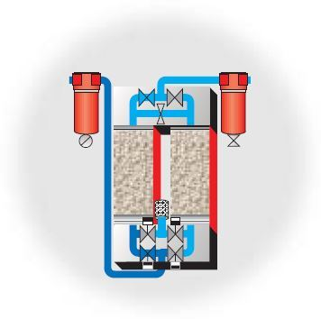
Aдсорбционный осушитель с холодной регенерацией фирмы ZANDER разработан на основе ясной и надежной
концепции с использованием проверенной технологии адсорбционных процессов.Отличительные особенности
адсорбционных осушителей серии K-MT:
- - все составные части смонтированы в единый модуль;
- - непосредственное управление главным и выпускным клапанами герметичного исполнения;
- - компактные обратные клапаны.
Во всех адсорбционных осушителях серии K-MT применяются:
- - самоочищающиеся ситовые сетки на влажной стороне;
- - высококачественные адсорбенты, адсорбент удерживает влагу, содержащуюся в сжатом воздухе.
В качестве адсорбента ZANDER применяет молекулярные сита исключительно высокой производительности.
Адсорбент имеет долгий срок службы в условиях высокой температуры на входе или низкой точки росы под давлением.
Регенерация происходит в потоке,идущем в направлении противоположном потоку, в котором происходит адсорбция.
Часть осушенного сжатого воздуха после понижения давления до атмосферного проходит через слой адсорбента,
требующего регенерации. Влага, задержанная на фазе адсорбции, захватывается и удаляется вместе
с потоком сухого регенерирующего воздуха. Расход воздуха на регенерацию в адсорбционных осушителях с
холодной регенерацией составляет 14,3% от общего объема сжатого воздуха. За 10-минутный цикл, предусмотренный для
осушителей ZANDER с адсорбцией, в течение 5 минут, происходит 12 перепадов давления в час. 10-минутный цикл,
предусмотренный для осушителей ZANDER, обеспечивает экономию электроэнергии и уменьшает износ.
Краткое описание неисправностей и их устранений
Большинство неисправностей возникают в результате несвоевременного технического обслуживания.
По опыту эксплуатации была выявлена одна существенная неисправность, не имеющая отношение к
периодическому техническому обслуживанию: разгерметизация в зоне пластин обратных
и электромагнитных клапанов (выделено красными кружками).
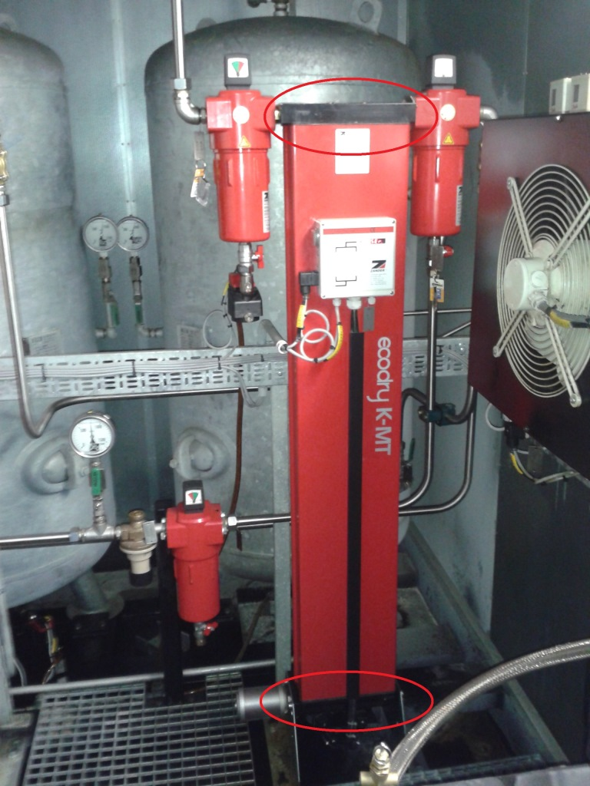
Наиболее показательным способом выявления нарушения герметичности адсорбционной установки является
увеличение времени работы компрессора (на картинке пики слева, справа после восстановления герметичности).
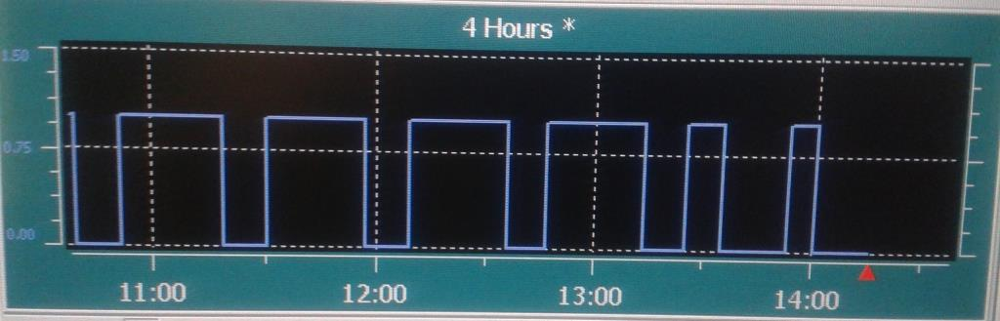
После вскрытия крышки электромагнитных клапанов выявлена сильная загрязненность ситовой сетки, а также
сильное загрязнение перепускных лабиринтов крышки электромагнитных клапанов с вкраплениями масляных фракций.
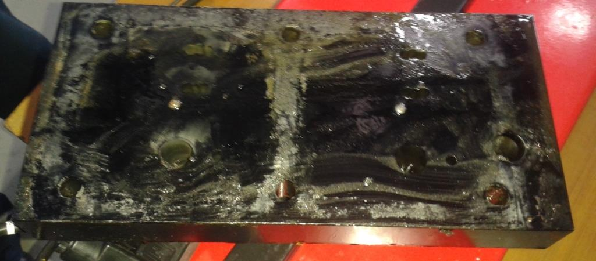
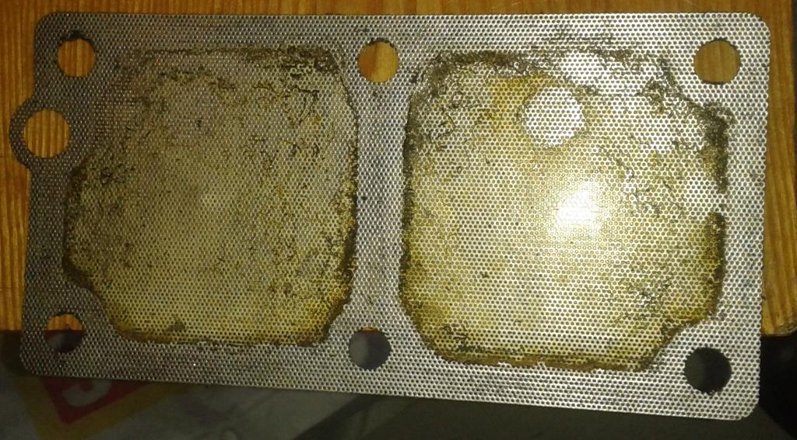
Особого внимания заслуживают крепежные элементы крышек обратных и электромагнитных клапанов. При нарушении
герметичности у некоторых болтов обнаружено срывание резьбы. Для оптимизации была предложена замена штатных болтов
на шпильки с большей длиной.
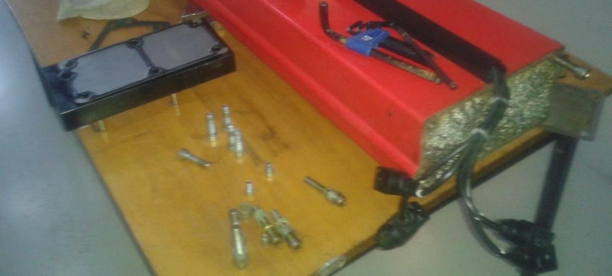
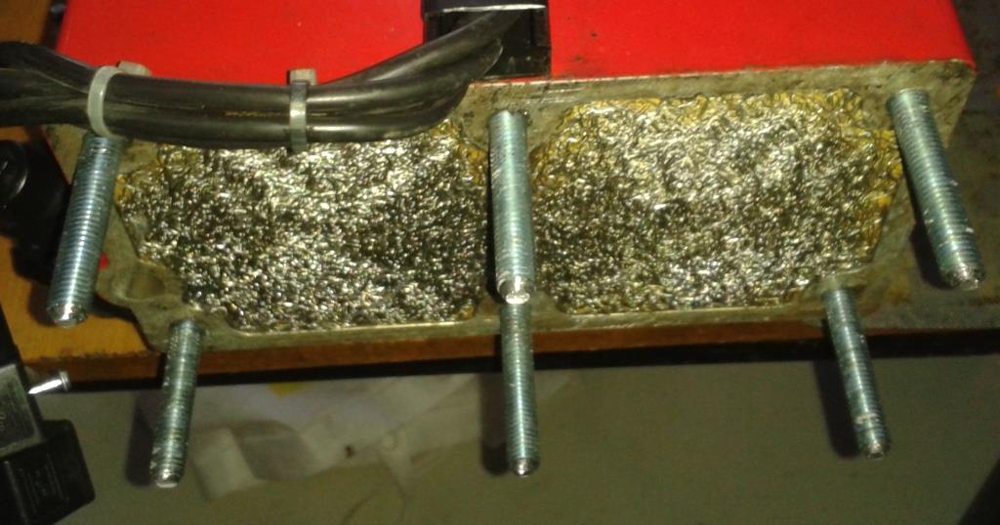
Для усиления герметических свойств в зоне стыка крышек обратных и электромагнитных клапанов вместо
резиновых прокладок, теряющих свои свойства от высоких температур и давления, было решено применить прокладки
из маслостойкого паронита ПМБ с толщиной листа 2,0 мм.
Листовой паронит "ПМБ" (маслобензостойкий) применяют в виде всевозможных прокладок для уплотнения
плоских разъёмов неподвижных соединений различных насосов, сосудов, трубопроводов, арматуры, компрессоров
и других агрегатов. Поставляется в виде листов 1500х200 мм, толщиной 0,4-1,5 мм, и 1500х2000-3000 мм,
толщиной 2,0-5,0 мм. Паронит не является коррозионно-активным при работе с алюминиевыми анодированными сплавами,
латунью и оцинкованной сталью с хроматным пассивированием. Образцы паронита обеспечивают полную герметичность
при испытании на уплотняющую способность в автоклавах в среде керосина при давлении в коллекторе 15 МПа,
давлении на образцы 32,4 МПа и температуре жидкой среды 20°С. Рабочая температура ПМБ от –40 до +490 °С.
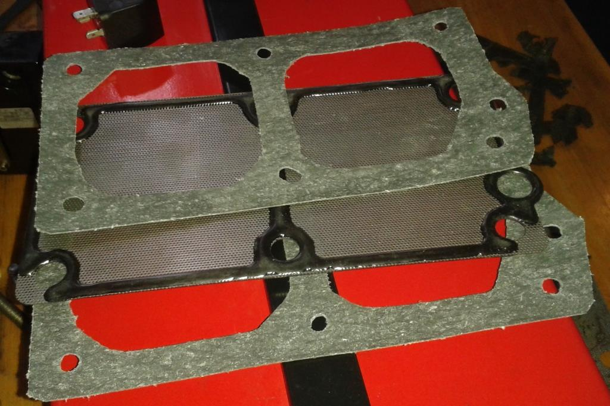
Внимание! Для усиления герметичных свойств дополнительно
был нанесён тонкий слой герметика
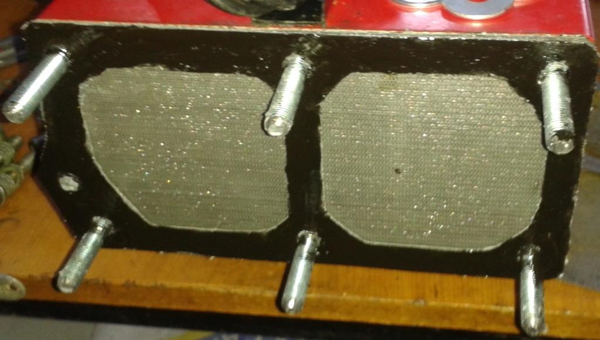
При сборке узла было дополнительно установлено:
- Широкая шайба;
- Гайка с дополнительной контргайкой (для фиксации основной гайки).
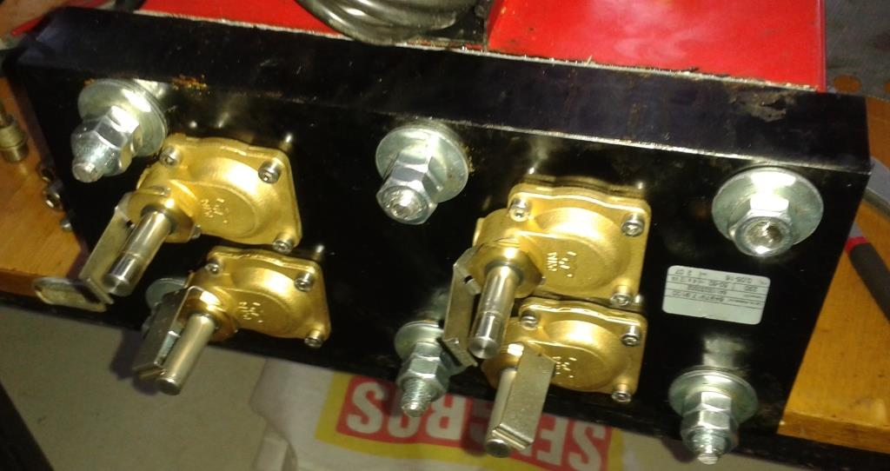
Внимание! Для затягивания винтов используйте динамометрический
ключ, внимательно соблюдайте следующий момент затяжки: 50 Нм (при штатном креплении)
или 25 Нм (при модорнизированном креплении).
После установки адсорбционной колонки и подключения воздуховодных магистралей была проведена
проверка на герметичность рабочим давлением. В качестве индикатора была использована мыльная эмульсия.
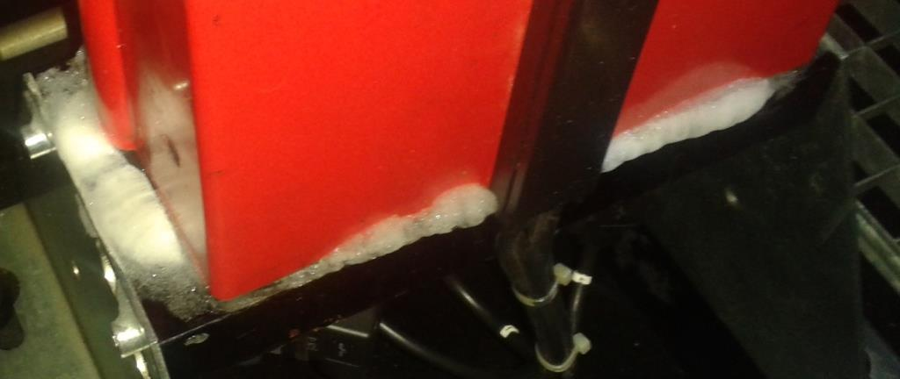
После выполнения вышеописанных мероприятий наработка на отказ составила 26'280 часов.
При реализации штатной методики наработка на отказ составляла от 8'760 часов
до 13'140 часов.
 SGT-800: эксплуатация вспомогательного и навесного оборудования
SGT-800: эксплуатация вспомогательного и навесного оборудования